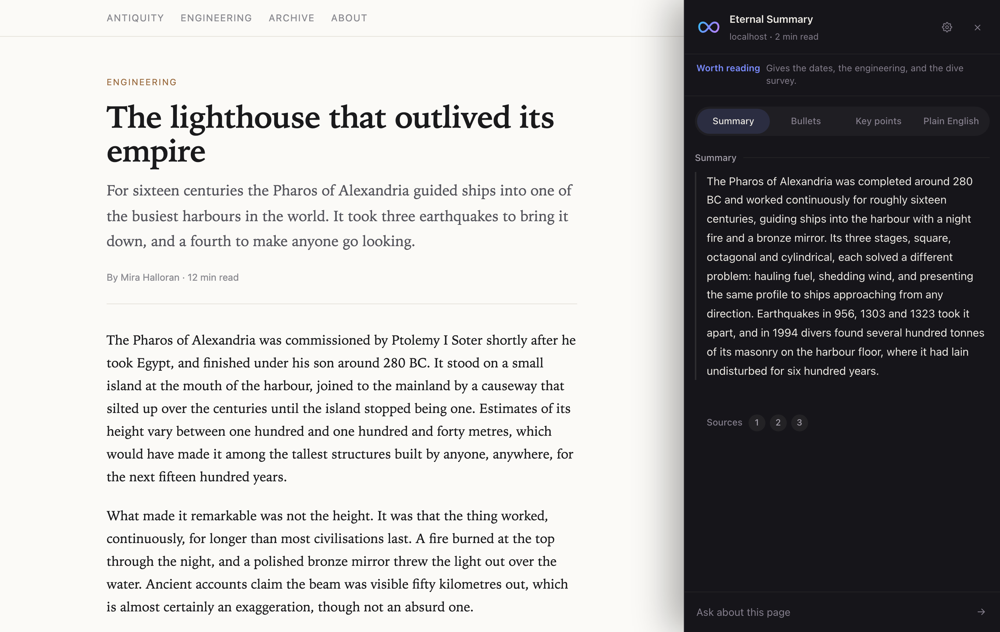
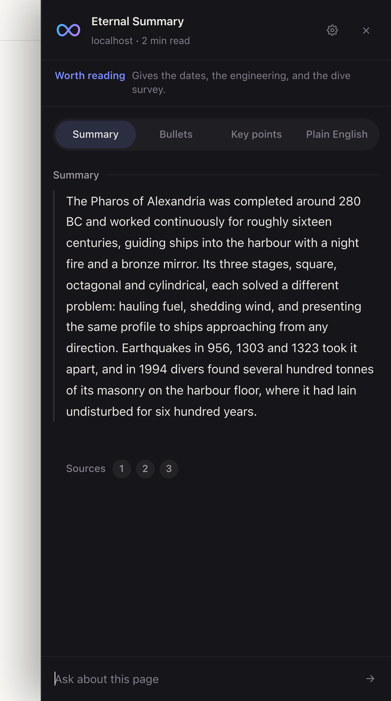
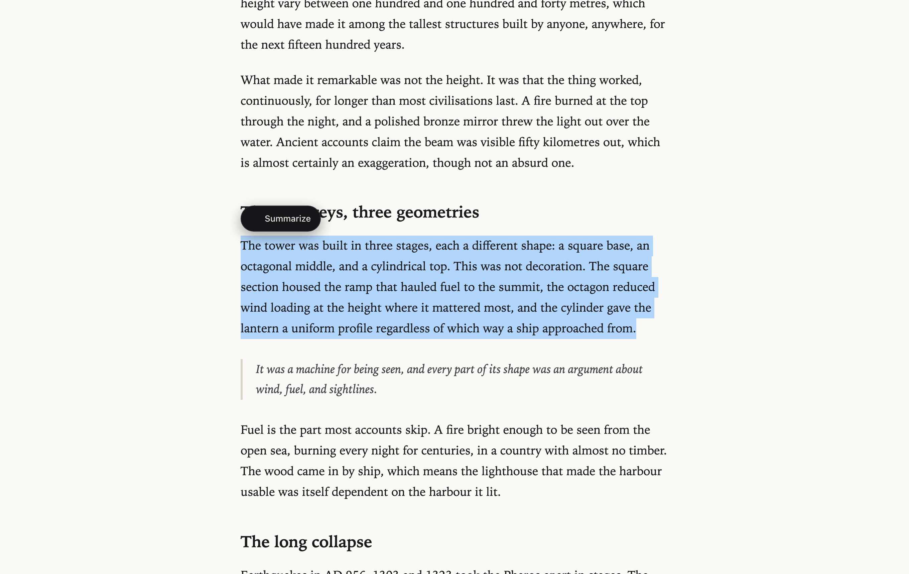
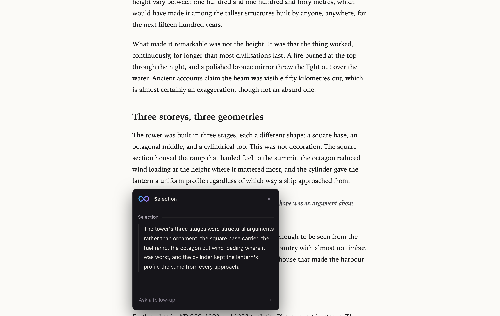
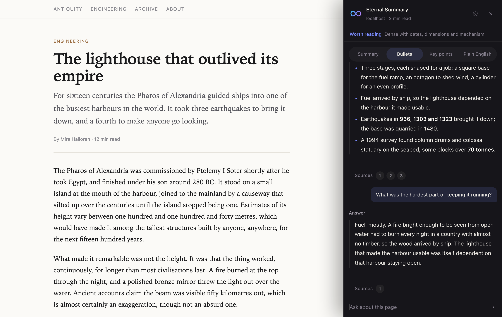

Every page summary shows its sources.
Click a number and the article scrolls to the quote.

One click summarizes the page you're on, with sources you can check.

Click a number and the article scrolls to the quote.

The card stays beside the passage as you scroll.


If the page doesn't cover it, the answer says so.

Switch any time. The thread keeps every answer.
Each page summary opens with a verdict and the reason for it.
Quotes stay in the page's own words, so you can still find them.
Yes. There's no account to make and nothing to pay for.
Ctrl+Shift+S opens it. On a Mac it's Cmd+Shift+S.
It reads the beginning, middle and end of long pages, so a slow opening doesn't skew the summary.
The panel tells you it couldn't find the quote instead of jumping somewhere wrong.
It answers from general knowledge, says so, and shows no sources for that answer.
The panel goes on either side at three widths, and the selection card opens at three sizes. You can turn off the floating button, the passage highlight, the text animation and saved summaries. It's all behind the gear in the panel.
The panel sits in a shadow root, so a site's styles can't restyle it. Keys you type into it don't trigger the site's shortcuts.
Nothing until you ask. Then the page text, your highlight or your question goes to a small server that passes it to Google's Gemini and keeps none of it. Summaries are saved in your browser and reused for 30 minutes. Clear them from the gear in the panel. Read the privacy policy.
Sideband Studio makes Eternal Summary. We built it because deciding whether a long article was worth reading meant reading it first.
Free. No account.
Add to Chrome